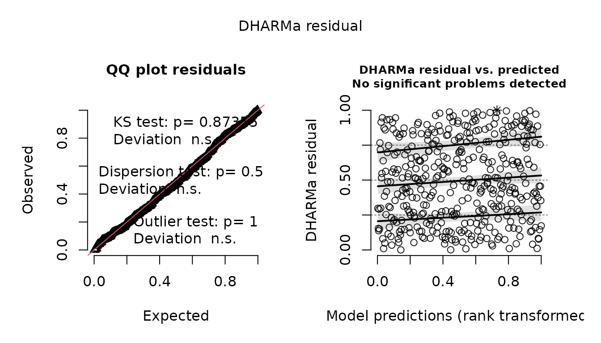
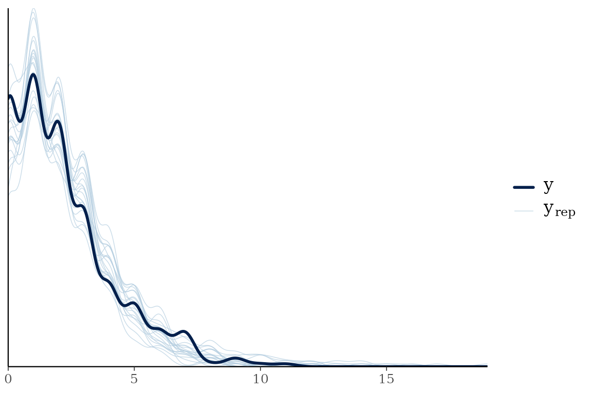

Diagnostics for a frmtmb fit answer three separate questions: did the optimizer find a real optimum, does the fitted family describe the data, and are the reported uncertainties trustworthy. Each has its own tool.
library(frmtmb)
set.seed(1)
n <- 400
dd <- data.frame(x = rnorm(n), g = factor(rep(1:20, n / 20)))
dd$y <- rpois(n, exp(0.5 + 0.4 * dd$x + rnorm(20, 0, 0.5)[dd$g]))
fit <- frm(bf(y ~ x + (1 | g)) + poisson(), data = dd)Did the optimizer converge?
diagnose() reports the convergence code, the largest
gradient component at the optimum, whether the Hessian is positive
definite, and covariance parameters near a boundary (a variance
component collapsing to zero is the common case):
diagnose(fit)
#> Optimizer convergence code: 0 (relative convergence (4))
#> Max |gradient|: 6.943e-05 at (Intercept)
#> Hessian positive definite: TRUE
#> No convergence problems detectedConvergence problems
The warning “Large maximum absolute gradient at the optimum” means
the optimizer stopped at a point where the objective still has slope
above frmtmb_control(grad_tol = 1e-3). Work through these
in order; each step tells you something even when it does not fix the
warning.
-
Identify the parameter.
diagnose(fit)prints the largest gradient component and its name. A coefficient of a continuous predictor points to scaling; atheta_*component points to a variance-parameter problem, anddiagnose()flags extreme values (a log-SD far below zero is a variance collapsing to its boundary, which is a model issue, not an optimizer issue). -
Fix predictor scaling. For a flagged coefficient,
frmtmb_control(autoscale = TRUE)standardizes badly scaled columns internally and judges convergence in the rescaled units; rescaling the variable in the data works equally well. -
Restart harder.
frmtmb_control(restarts = 3)re-launches the optimizer from the current optimum until the gradient passes;optCtrl = list(iter.max = 5000, eval.max = 5000)lifts the iteration caps for slow problems. -
Compare optimizers.
frm_allfit(fit)refits with nlminb, optim, bobyqa, and nloptr and tabulates log-likelihoods. All optimizers agreeing on the log-likelihood to several decimals while one warns usually means a flat ridge near the optimum, not a wrong answer; disagreement means the warning is real. -
Look at the profile.
plot(profile(fit, "theta_1"))shows whether the flagged parameter sits in a flat valley (benign) or on a slope (not converged). -
Boundary fits. When a random-effect SD is
collapsing to zero, the likelihood surface is one-sided and the gradient
check can never fully settle. Either simplify the random-effect
structure, or keep the term and regularize with
prior = set_prior("exponential(1)", class = "sd")(a MAP fit; the same move asblme’s covariance priors). -
Judge marginal cases. A gradient just above the
default
1e-3(say 0.001-0.01) with stable estimates across restarts and optimizers is typically flatness at machine precision for that problem’s scale, not non-convergence. The threshold is a heuristic;frmtmb_control(grad_tol = )tunes it, and steps 4-5 are the evidence for deciding.
Does the family fit the data?
Three residual types, in increasing order of statistical care:
-
residuals(fit)is response-scale (y - E[y]), in the response’s units. Good for effect-size intuition, useless as a distributional check for counts. -
residuals(fit, type = "pearson")standardizes by the family variance. -
residuals(fit, type = "osa")gives one-step-ahead quantile residuals via [TMB::oneStepPredict()]: each observation’s CDF position given the previous ones, mapped through the normal quantile function. They are standard normal under a correctly specified model regardless of family, and remain valid under correlated observations, where pearson residuals mislead.
Simulation-based residuals through DHARMa cover the same ground with a richer test suite (dispersion, zero-inflation, outliers) and better plots:
dh <- dharma_residuals(fit, nsim = 200, seed = 1)
plot(dh)
DHARMa::testDispersion(dh, plot = FALSE)
#>
#> DHARMa nonparametric dispersion test via sd of residuals fitted vs.
#> simulated
#>
#> data: simulationOutput
#> dispersion = 1.0486, p-value = 0.59
#> alternative hypothesis: two.sidedA misspecified model shows up immediately; here the same data fit without the group effect is overdispersed:
fit_bad <- frm(bf(y ~ x) + poisson(), data = dd)
DHARMa::testDispersion(dharma_residuals(fit_bad, nsim = 200, seed = 1),
plot = FALSE)
#>
#> DHARMa nonparametric dispersion test via sd of residuals fitted vs.
#> simulated
#>
#> data: simulationOutput
#> dispersion = 1.661, p-value < 2.2e-16
#> alternative hypothesis: two.sidedTwo quicker looks. plot(fit) draws Pearson residuals
against fitted values and their normal QQ plot. And
pp_check(fit) overlays the observed response with responses
simulated from the fitted model, through bayesplot’s ppc_*
functions (brms users know this display):
bayesplot::pp_check(fit, ndraws = 20)
Are the standard errors trustworthy?
Wald standard errors and the Laplace approximation share failure
modes: variance components with few groups, binary data with tiny
clusters. Three things in this package route around that:
confint(method = "profile") replaces the quadratic
assumption, frm_bootstrap() replaces it with a resampling
distribution, and frm(quadrature = TRUE) replaces the
Laplace approximation itself with adaptive quadrature.
To measure the violation rather than route around it, install the
companion package frmtmb.sample and read
vignette("posterior-diagnostics", package = "frmtmb.sample"),
which covers check_laplace() and the diagnostics of a
sampled fit; this page stays with the maximum-likelihood side.
Variance components on their natural scale
confint_varcorr() reports random-effect SDs and
correlations with delta-method intervals on interpretable scales:
confint_varcorr(fit)
#> block term type estimate lwr upr
#> 1 1 | g (Intercept) sd 0.4783034 0.3383263 0.6761937